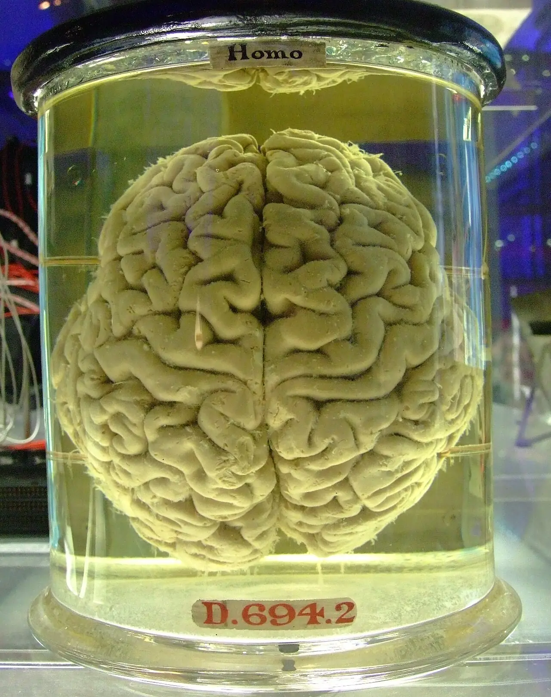
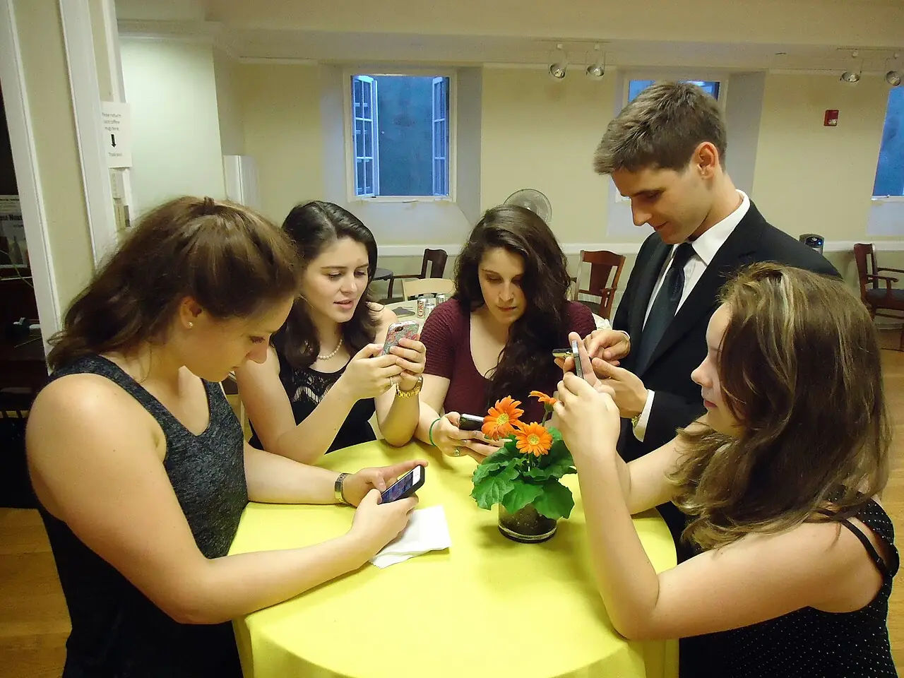
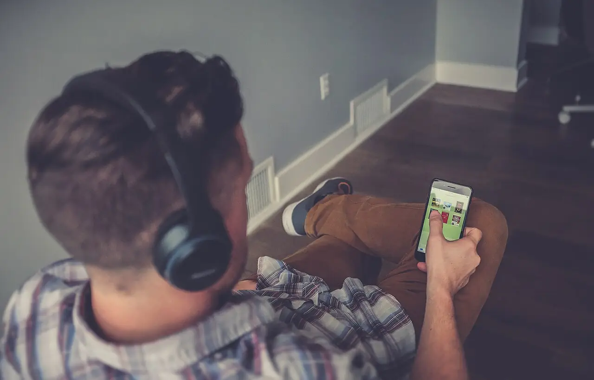
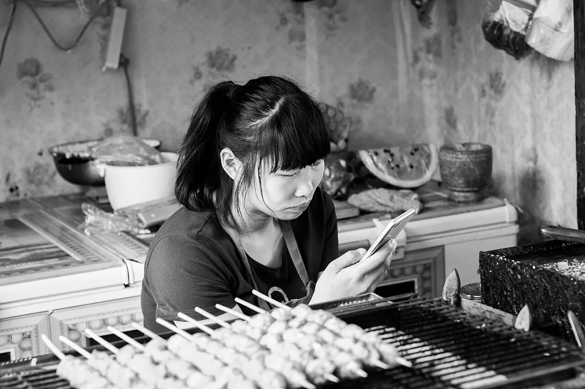
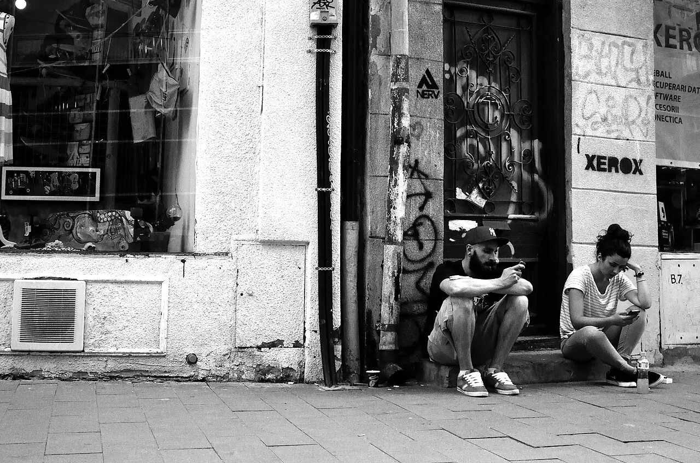
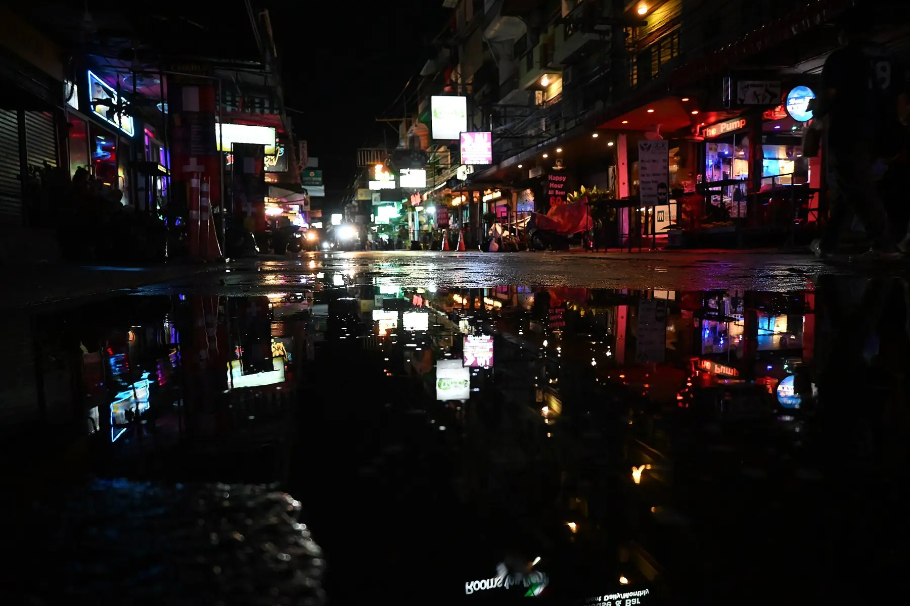
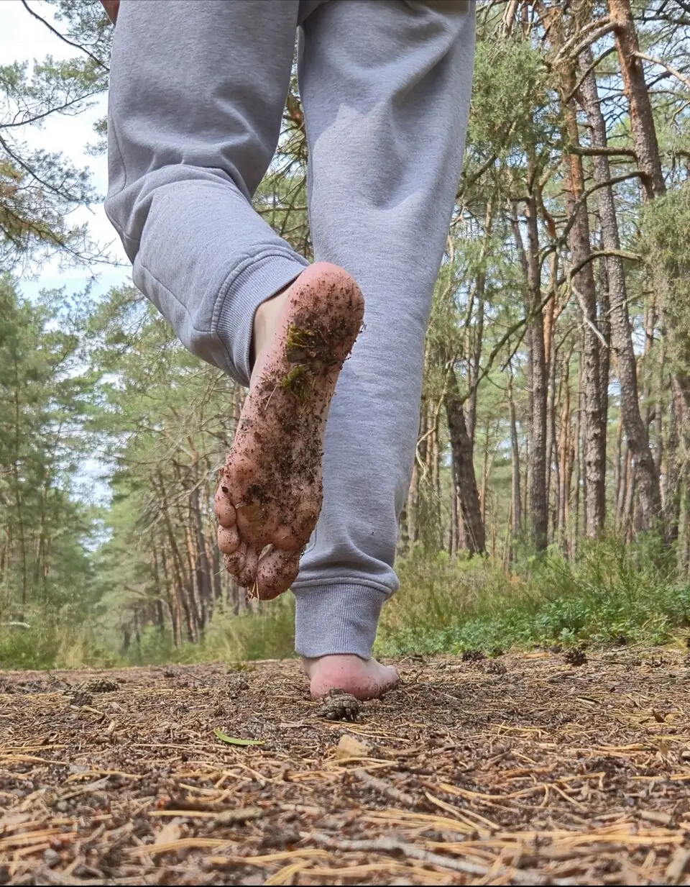
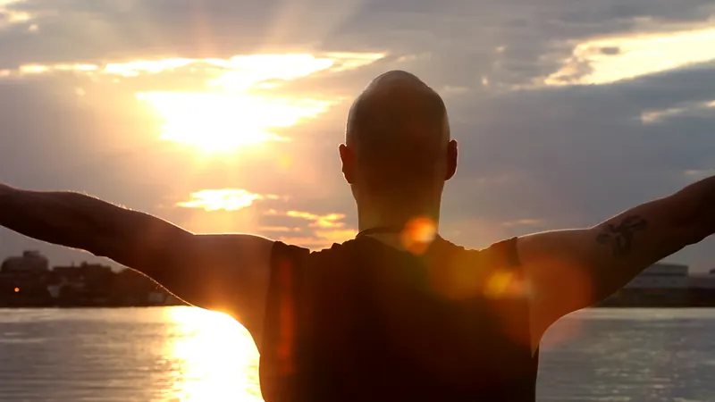
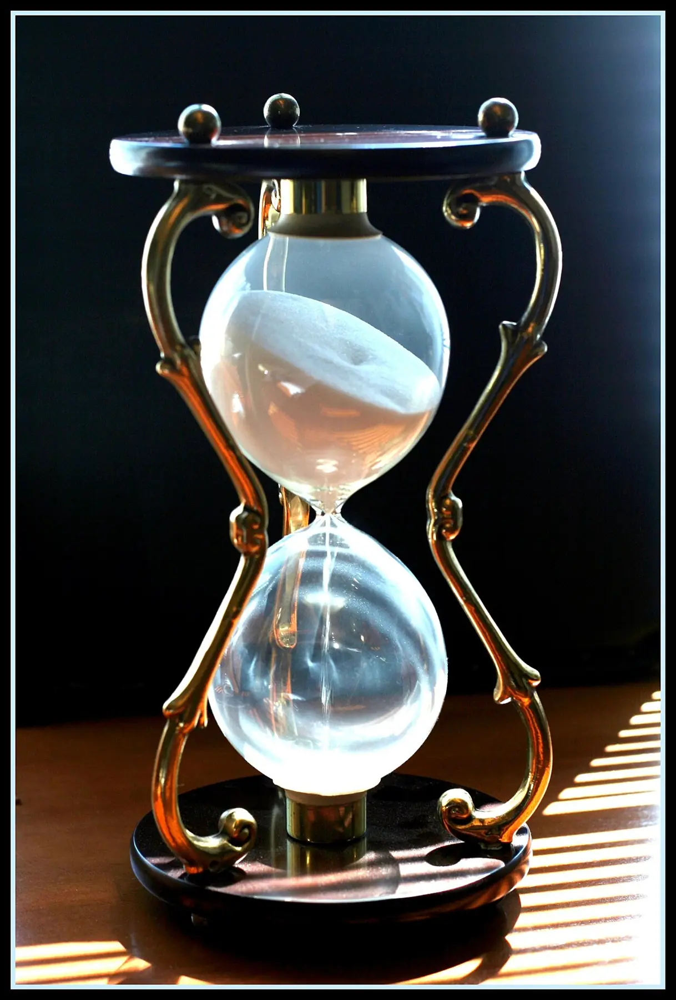

Chaque swipe est un tirage au sort : la prochaine vidéo sera peut-être géniale. Ce suspense, celui des machines à sous, entretient la boucle bien après que le plaisir a disparu.
Ce qui se passe
Trois mécanismes, une même fatigue.
Le « brain rot » n'est pas un diagnostic médical. C'est le nom d'un état bien réel : attention en miettes, mémoire floue, ennui insupportable.
Passer d'une tâche à l'autre n'est jamais gratuit : une partie de ton attention reste accrochée à la précédente. Cent micro-interruptions par jour, et rien ne s'approfondit.
Habitué à un flux rapide, le cerveau monte son seuil : un livre, une conversation lente ou une file d'attente deviennent pénibles. Ce seuil se rééduque.

Oxford · mot de l'année 2024
Brain rot : « la détérioration supposée de l'état mental ou intellectuel d'une personne, vue comme le résultat d'une surconsommation de contenus jugés triviaux ou peu stimulants, en particulier en ligne ».
Galerie · le monde réel
Ensemble, mais ailleurs.
Des scènes de tous les jours, vues en rouge. Passe la souris ou le doigt sur une photo : la loupe de réalité te rend ses vraies couleurs.




Astuce : clique sur une photo pour la faire onduler.
Avant / après · glisse
Deux vies, un seul geste.
À gauche, la nuit sans fin des écrans. À droite, la même heure passée dehors. Fais glisser le curseur.


⇆
50 % écran · 50 % réelUtilise aussi les flèches du clavier
Simulateur · fil infini
Scrolle. Regarde ce qui se passe.
Fais défiler le téléphone comme tu le ferais d'habitude. À droite, le simulateur montre ce que l'appli ne t'affiche jamais : le temps qui file, les récompenses rares et ton attention qui baisse.
0vidéos vues
0 mintemps réel estimé
0vraies pépites
Attention disponible100 %
Récompense par vidéo (haut = forte)■ pépite
Commence à scroller dans le téléphone (molette, doigt ou bouton ci-dessous).
Simulation pédagogique : environ 1 vidéo sur 8 est une « pépite », chaque vidéo compte pour 20 s de visionnage réel.
Diagnostic · 10 questions
Où en est ton cortex ?
Réponds honnêtement. Rien n'est envoyé : le calcul se fait dans ton navigateur.
Scanner cérébral
Ta carte de saturation
Chaque zone s'allume selon tes réponses. C'est une carte symbolique pour visualiser tes points faibles, pas une image médicale.
Labo · deux tests de psychologie cognitive
Mesure ton attention, pour de vrai.
Le questionnaire mesure tes habitudes. Ces deux tests classiques mesurent tes performances. Refais-les après ton plan de 7 jours pour comparer.
Test de Stroop
Clique sur la couleur de l'encre, pas sur le mot écrit. Ton cerveau doit bloquer la lecture automatique : c'est ta capacité à filtrer les distractions. Touches 1 à 4 sur clavier.
20 essais, environ 1 minute
0 / 20
–ms, mot = couleur
–ms, mot ≠ couleur
–ms d'interférence
Plus l'écart d'interférence est faible, mieux tu résistes aux distractions.
Empan de chiffres
Des chiffres s'affichent un par un. Retape-les dans l'ordre. La série s'allonge à chaque réussite. Deux erreurs de suite et le test s'arrête. C'est ta mémoire de travail.
Mémorise, puis retape
Longueur : 3
La plupart des adultes retiennent entre 5 et 9 chiffres.
Calculateur · ta vie en semaines
Ce que coûte vraiment le scroll.
Chaque point est une semaine de ta vie restante, jusqu'à 80 ans. En rouge : la part de ton temps éveillé qui partirait dans le scroll au rythme actuel.
Jusqu'à 80 ans, à ce rythme
–
–heures par an
–livres possibles / an
–langues apprises
Hypothèses : 16 h éveillé par jour, un livre ≈ 6 h de lecture, une langue au niveau conversationnel ≈ 600 h. Valeurs par défaut : un exemple, règle les curseurs.
temps de scrolltemps libre1 ligne = 1 an · 52 points
Ce que tu rates
Pendant que tu scrolles.
Moment 1 / 5 · continue de descendre

Protocole · 8 techniques
Récupérer, sans s'exiler dans une grotte.
Pas besoin de jeter ton téléphone. Il s'agit de remettre de la friction là où l'algorithme l'a retirée, et de réentraîner ce qui s'est atrophié.
Exercices · à faire ici, maintenant
Entraîne l'attention comme un muscle.
Respiration carrée
4 secondes par côté : inspire, retiens, expire, retiens. Quatre cycles calment l'envie de dégainer ton téléphone.
Prêt ?
Cycle 0 / 4
Défi sans fuite
Lance le minuteur et reste sur cette page. Chaque changement d'onglet ou d'appli compte comme une rupture.
0ruptures
–meilleure série
Pose ton téléphone hors de portée avant de commencer.
Bruit brun de concentration
Un souffle grave et régulier, généré en direct par ton navigateur. Il masque les bruits qui te sortent d'une tâche. Mets un casque et lance un bloc de travail.
Commence à volume bas : il doit couvrir, pas fatiguer.
Plan · 7 jours
Une semaine pour reprendre la main.
Un changement par jour. Coche au fur et à mesure : ta progression reste enregistrée dans ce navigateur.
0 / 7 jours terminés
Dernier mot
Ton attention t'appartient.
Pas à l'algorithme. Commence aujourd'hui, avec un seul geste.